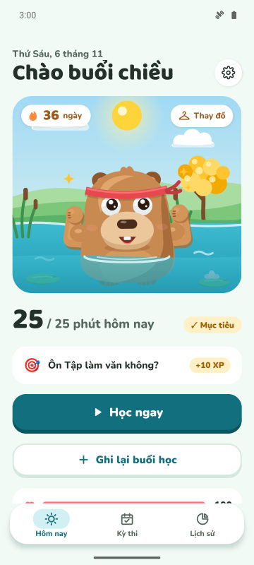
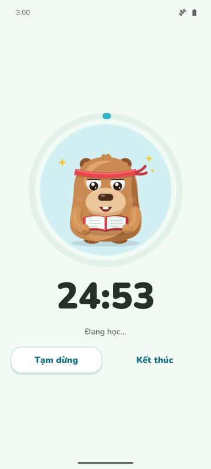
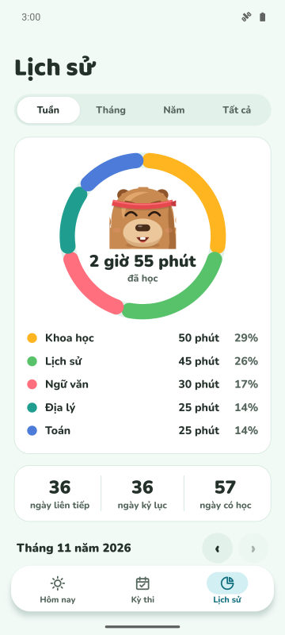
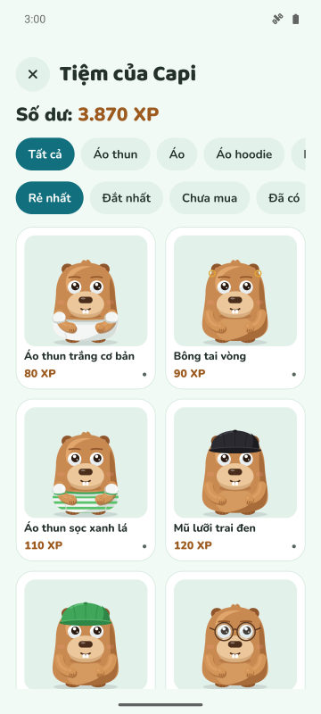

Mục tiêu ngày và chuỗi ngày
Chọn số phút học mỗi ngày. Đạt mục tiêu, chuỗi ngày tăng và capybara ăn mừng.
Đồng hồ tập trung, chuỗi ngày học và đếm ngược kỳ thi. Bạn càng học, capybara càng vui và khỏe.
Sắp có trên Google Play
Miễn phí cho Android. iPhone sẽ có sau.

Chọn số phút học mỗi ngày. Đạt mục tiêu, chuỗi ngày tăng và capybara ăn mừng.
Đồng hồ với ba chế độ. Ở Chế độ Bảo vệ, capybara hiện lên trên các ứng dụng bạn muốn tránh.
Thêm kỳ thi và xem số ngày còn lại. Mỗi ngày có một nhiệm vụ với môn cần chú ý nhất.
Kiếm XP khi học và đổi lấy quần áo, phụ kiện. Capybara còn ăn mừng ngày lễ và sinh nhật bạn.



Có. Ứng dụng miễn phí và có quảng cáo. Premium (không bắt buộc) bỏ quảng cáo và mở Chế độ Bảo vệ, tắt thông báo khi tập trung và 3 khiên chuỗi ngày mỗi tháng.
Không. Dữ liệu nằm trên điện thoại của bạn. Nếu muốn, bạn có thể đồng bộ với Google Drive của chính mình.
Được. Thêm ngày thi, theo dõi đếm ngược và nhận nhắc nhở trước 7, 3 và 1 ngày.
Với Forest bạn trồng cây. Với CapyFoco bạn chăm một chú capybara lớn lên theo việc học, có chuỗi ngày, mục tiêu và đếm ngược kỳ thi trong cùng một ứng dụng.
Hiện chỉ có Android. Bản iPhone đang được lên kế hoạch.